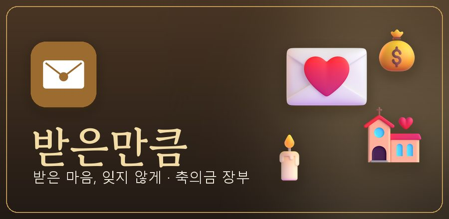
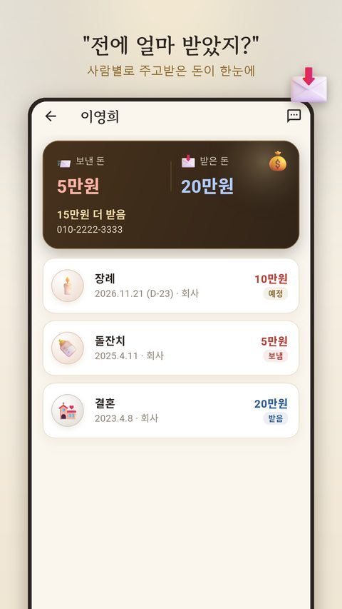
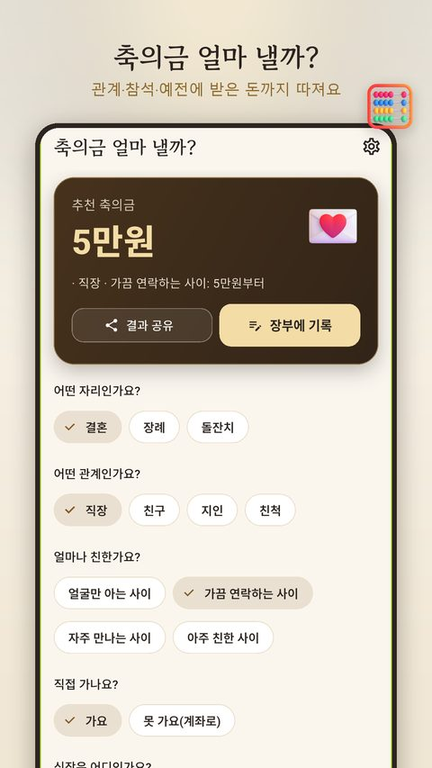

축의금 얼마가 적당할까? 관계별 금액 기준 정리
청첩장을 받으면 가장 먼저 드는 고민이 금액입니다. 너무 적으면 서운할까 걱정되고, 너무 많으면 부담이 되죠. 정답은 없지만, 많은 사람이 참고하는 기준과 금액을 정하는 순서를 정리했습니다.
관계별 축의금 기준
| 관계 | 흔히 내는 금액 |
|---|---|
| 얼굴만 아는 지인, 다른 부서 동료 | 5만 원 (불참이면 3~5만 원) |
| 자주 만나는 친구, 같은 팀 동료 | 10만 원 |
| 아주 친한 친구, 가까운 친척 | 10만 원 이상 |
| 형제자매, 가족 | 집안 사정에 따라 크게 다름 |
※ 흔히 쓰는 참고 기준입니다. 지역, 나이, 집안 분위기에 따라 다를 수 있어요.
금액을 정하는 순서
1. 예전에 받은 적이 있는지 먼저 봅니다
가장 중요한 기준입니다. 상대에게 축의금을 받은 적이 있다면, 받은 금액만큼은 돌려드리는 것이 기본입니다. 받은 지 오래되었다면 그동안 오른 물가를 생각해 조금 더 하기도 합니다.
2. 관계와 친한 정도를 봅니다
위 표를 기준으로, 앞으로도 계속 볼 사이인지, 최근에 얼마나 자주 연락했는지를 함께 생각합니다.
3. 참석 여부와 예식장을 봅니다
직접 가서 식사를 한다면 식대를 생각해 조금 더 내는 경우가 많습니다. 호텔 예식장은 식대가 높은 편이라 한 단계 올려 생각하는 분도 많습니다. 참석하지 못하고 계좌로만 보낸다면 조금 줄여도 실례가 아닙니다.
4. 짝수보다 홀수 단위
예전부터 3만, 5만, 7만처럼 홀수 단위를 쓰는 관습이 있습니다. 다만 10만 원은 예외로 흔히 씁니다.
"예전에 얼마 받았지?"가 기억나지 않는다면
결혼식 방명록은 서랍 속에 있고, 몇 년 전 일은 기억이 흐릿합니다. 그래서 경조사 기록은 받은 날 바로 정리해 두는 것이 가장 좋습니다. 종이 장부나 엑셀도 좋지만, 폰에 적어 두면 청첩장을 받은 자리에서 바로 찾아볼 수 있습니다.

퇴근후랩이 만든 받은만큼은 이런 고민 때문에 만든 축의금 장부 앱입니다.
- 이름만 검색하면 그 사람과 주고받은 돈이 바로 보입니다. 초성만 쳐도 찾아요. (ㅎㄱㄷ → 홍길동)
- 관계, 참석 여부, 호텔 예식장 여부, 예전에 받은 돈을 넣으면 금액을 추천합니다.
- 내 결혼식이나 장례 때는 방명록을 보며 이름과 금액만 연달아 적으면 합계가 나옵니다.
- 앞으로 갈 경조사를 적어 두면 하루 전과 당일에 알려 줍니다.

